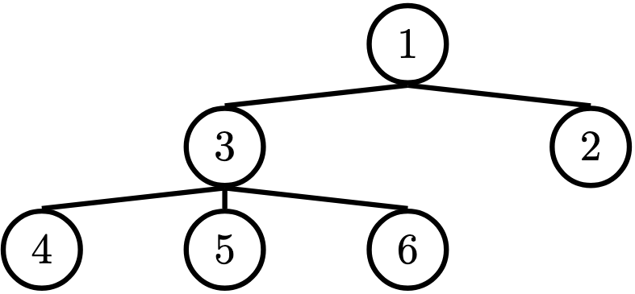

Discussion 5: Trees
Data Abstraction
Data abstraction is a powerful concept in computer science that allows programmers to treat code as objects. For example, using code to represent cars, chairs, people, and so on. That way, programmers don't have to worry about how code is implemented; they just have to know what it does.
Data abstraction mimics how we think about the world. If you want to drive a car, you don't need to know how the engine was built or what kind of material the tires are made of to do so. You just have to know how to use the car for driving itself, such as how to turn the wheel or press the gas pedal.
A data abstraction consists of two types of functions:
- Constructors: functions that build the abstract data type.
- Selectors: functions that retrieve information from the data type.
Programmers design data abstractions to abstract away how information is stored and calculated such that the end user does not need to know how constructors and selectors are implemented. The nature of abstraction allows whoever uses them to assume that the functions have been written correctly and work as described.
Trees
One example of data abstraction is with trees.
In computer science, trees are recursive data structures that are widely used in various settings and can be implemented in many ways. The diagram below is an example of a tree.

Notice that the tree branches downward. In computer science, the root of a tree starts at the top, and the leaves are at the bottom.
Some terminology regarding trees:
- Parent Node: A node that has at least one branch.
- Child Node: A node that has a parent. A child node can only have one parent.
- Root: The top node of the tree.
In our example, this is the
1node. - Label: The value at a node. In our example, every node's label is an integer.
- Leaf: A node that has no branches.
In our example, the
4,5,6,2nodes are leaves. - Branch: A subtree of the root. Trees have branches, which are trees themselves: this is why trees are recursive data structures.
- Depth: How far away a node is from the root.
We define this as the number of edges between the root to the node.
As there are no edges between the root and itself, the root has depth 0.
In our example, the
3node has depth 1 and the4node has depth 2. - Height: The depth of the lowest (furthest from the root) leaf.
In our example, the
4,5, and6nodes are all the lowest leaves with depth 2. Thus, the entire tree has height 2.
In computer science, there are many different types of trees. Some vary in the number of branches each node has; others vary in the structure of the tree.
Working with Trees
A tree has both a value for the root node and a sequence of branches, which are also trees. In our implementation, we represent the branches as a list of trees. Since a tree is a data abstraction, our choice to use lists is just an implementation detail.
- The arguments to the constructor
treeare the value for the root node and an optional list of branches. If no branches parameter is provided, the default value[]is used. - The selectors for these are
labelandbranches.
Remember branches returns a list of trees and not a tree directly.
It's important to distinguish between working with a tree and working with a list of trees.
We have also provided a convenience function, is_leaf.
Let's try to create the tree from above:
t = tree(1,
[tree(3,
[tree(4),
tree(5),
tree(6)]),
tree(2)])Tree Data Abstraction Implementation
For your reference, we have provided our implementation of trees as a data abstraction.
def tree(label, branches=[]):
"""Construct a tree with the given label value and a list of branches."""
return [label] + list(branches)
def label(tree):
"""Return the label value of a tree."""
return tree[0]
def branches(tree):
"""Return the list of branches of the given tree."""
return tree[1:]
def is_leaf(tree):
"""Returns True if the given tree's list of branches is empty, and False
otherwise.
"""
return not branches(tree)Q1: Tree Abstraction Barrier
Consider a tree t constructed by calling
tree(1, [tree(2), tree(4)]). For each of the following expressions,
answer these two questions:
- What does the expression evaluate to?
- Does the expression violate any abstraction barriers? If so, write an equivalent expression that does not violate abstraction barriers.
label(t)t[0]label(branches(t)[0])is_leaf(t[1:][1])[label(b) for b in branches(t)]Challenge:
branches(tree(5, [t, tree(3)]))[0][0]
Q2: Height
Write a function that returns the height of a tree. Recall that the height of a tree is the length of the longest path from the root to a leaf.
Run in 61A CodeQ3: Maximum Path Sum
Write a function that takes in a tree and returns the maximum sum of the values along any path in the tree. Recall that a path is from the tree's root to any leaf.
Run in 61A CodeQ4: Find Path
Write a function that takes in a tree and a value x and returns a list containing the nodes along the path required to get from the root of
the tree to a node containing x.
If x is not present in the tree, return None. Assume that the entries of the tree are unique.
For the following tree, find_path(t, 5) should return [2, 7, 6, 5]

Q5: Perfectly Balanced
Part A:
Implement sum_tree, which returns the sum of all the labels in tree t.
Part B:
Implement balanced, which returns whether every branch of t has the
same total sum and that the branches themselves are also balanced.
Challenge: Solve both of these parts with just 1 line of code each.
Run in 61A CodeQ6: Sprout Leaves
Define a function sprout_leaves that takes in a tree, t, and a list of
leaves, leaves. It produces a new tree that is identical to t, but where each
old leaf node has new branches, one for each leaf in leaves.
For example, say we have the tree t = tree(1, [tree(2), tree(3, [tree(4)])]):
1
/ \
2 3
|
4If we call sprout_leaves(t, [5, 6]), the result is the following tree:
1
/ \
2 3
/ \ |
5 6 4
/ \
5 6Additional Practice
Q7: Hailstone Tree
We can represent the hailstone sequence as a tree in the figure below,
showing the route different numbers take to reach 1. Remember that a hailstone
sequence starts with a number n, continuing to n/2 if n is even or 3n+1
if n is odd, ending with 1. Write a function hailstone_tree(n, h)
which generates a tree of height h, containing hailstone numbers that
will reach n.
Run in 61A CodeHint: A node of a hailstone tree will always have at least one, and at most two branches (which are also hailstone trees). Under what conditions do you add the second branch?